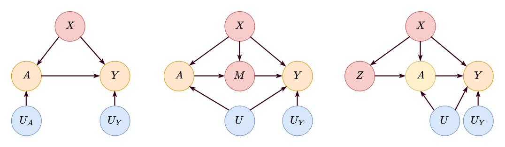
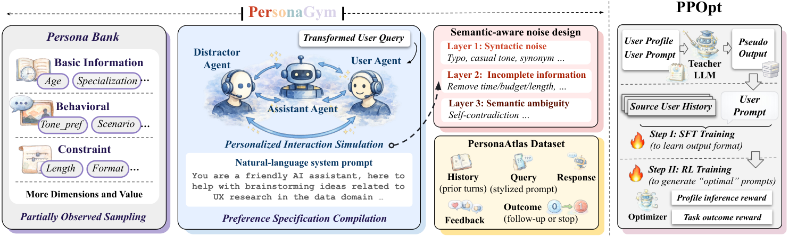
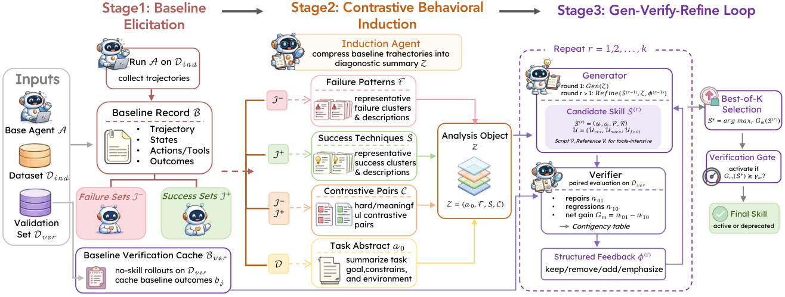

Yuchen Ma 马羽宸
I am a Ph.D. student in Computer Science at LMU Munich, supervised by Prof. Stefan Feuerriegel. Currently, I am a research intern at Microsoft Research, working with Swadheen Shukla and Michel Galley.
My research interests are in agentic AI, large language models, and causal inference. Here are some core problems I am thinking about:
- How can we build foundation models that reason about cause and effect?
- How can LLMs adapt to individual users at scale?
- How can agents improve themselves by learning verified skills from their own experience?
I'm happy to connect and discuss potential collaborations.
News
Selected Projects

Causal Foundation Models
We build foundation models that perform causal inference on new datasets in a training-free way via in-context learning.
Highlights:
-
Foundation Models for Causal Inference via Prior-Data Fitted Networks, In ICLR 2026 (🧰 CausalFM Toolkit)
We introduce CausalFM, a comprehensive framework for training PFN-based foundation models in various causal inference settings, including back-door adjustment, front-door adjustment, and instrumental variables. CausalFM formalizes principled Bayesian priors based on structural causal models and enables Bayesian causal inference via in-context learning.
Other related works: DiffPO (NeurIPS'24), Multi-Outcome Distributions of Treatments (KDD'25), Treatment Effects under Text Confounding (NeurIPS'25), Counterfactual Fairness (CLeaR'26)

Personalized LLMs
We develop scalable approaches for adapting LLMs to individual users' preferences and latent constraints.
Highlights:
-
Synthetic Interaction Data for Scalable Personalization in Large Language Models, In KDD 2026
We introduce PersonaGym, a high-fidelity synthetic data generation framework that simulates dynamic, personalized user–LLM interactions at scale, and PPOpt, a personalized prompt optimizer trained with supervised fine-tuning and reinforcement learning to rewrite user prompts based on user profiles and interaction history.

Agent Skill Synthesis
We study how LLM agents can distill their own experience into reusable, verified skills that improve capabilities without retraining.
Highlights:
-
SkillGen: Verified Inference-Time Agent Skill Synthesis, Preprint (💻 Code)
SkillGen is a multi-agent framework that synthesizes a single auditable skill from trajectories generated by a base agent. It leverages contrastive induction over successful and failed trajectories and models skill synthesis as an intervention problem, with a gen–verify–refine loop that ensures a verified positive impact before deployment.
Recent Preprints & Publications
(*: Equal Contribution) · The full publication list can be found on my Google Scholar profile.
Experience
 Max Planck Institute · Advisor: Prof. Zeynep Akata
Max Planck Institute · Advisor: Prof. Zeynep Akata